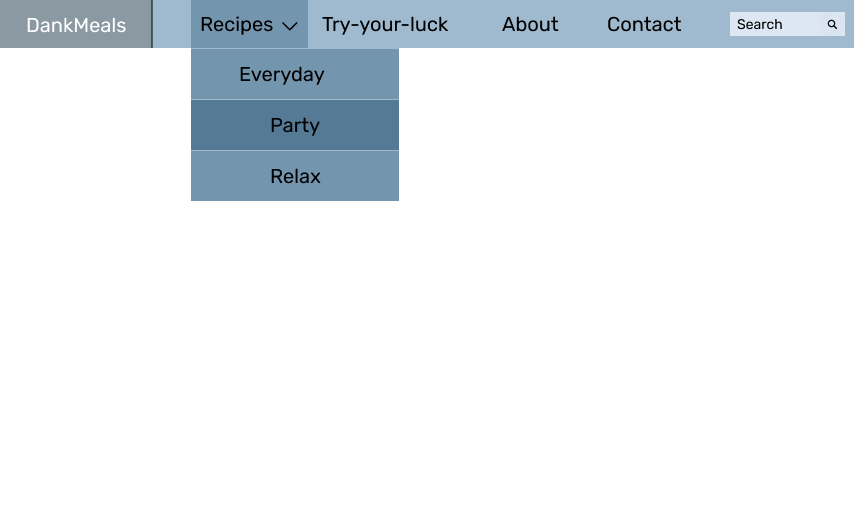
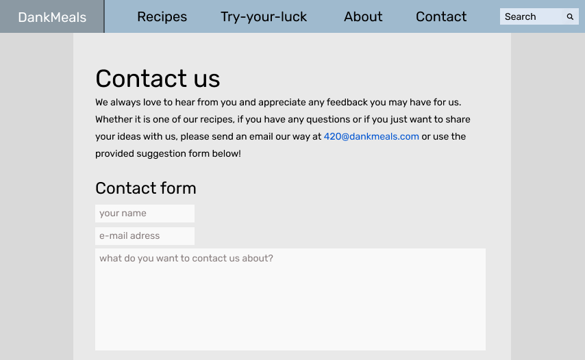
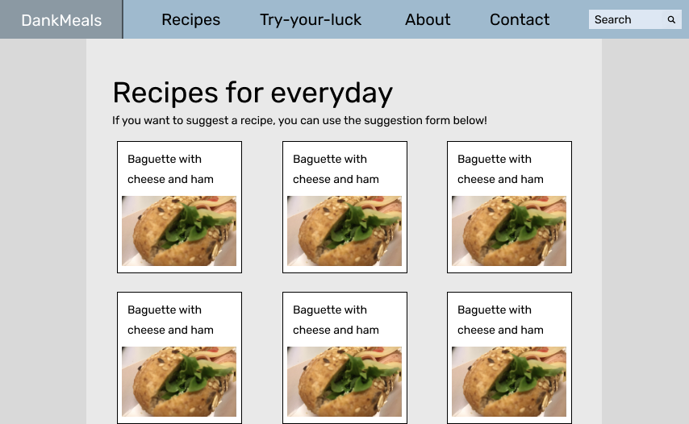
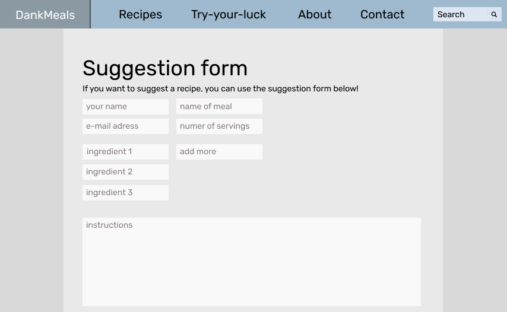
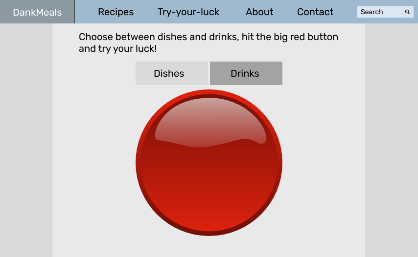
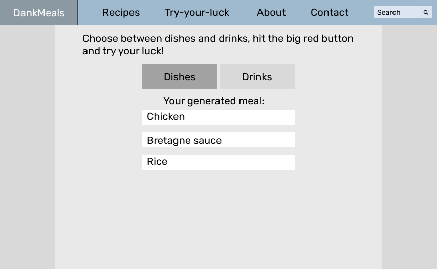

Content
What follows is a list of all the pages that will be implemented in the website. The content of each page will be explained.
Each page will have a banner along the top of the page where it will be possible to navigate to other pages.
-
The homepage
The homepage is the first page the users sees upon entering the website. This page will contain the name "DankMeals" as well as a "meal-of-the-day" box with an image of the meal and an internal link to the recipe for that meal.
Since the goal of the website is to get students to do more cooking at home while maintaining a busy schedule, the homepage should not be too cluttered or contain too much content. We opted for a minimalistic and clean homepage to make it as accesible as possible.
-
About us

The page about us will quite simply be about us, the project and its goals.
The backstory of the project as well as its long-term goal, the different people involved and donors will all be included on this page. While the page itself will maintain a simple and clean look, there will be a significant amount of content on this pages compared to the homepage.
-
Contact
There will be a form users can fill out with a message in order to contact us.
-
Recipes
The page for recipes will contain
- links to the three different recipe "repositories",
- a link to a specialized contact form where users will be able to send in suggestions for recipes.
There will be explanations for what the subpages contain, i.e. what kinds of recipes the user can expect from the three recipe "repositories" and what the suggestions form is used for.
-
Recipe sub-pages
There are three recipe sub-pages, containing recipes for different settings. They are
The recipe sub-pages will all have the same structure and design. They will contain a list of all the relevant recipes. Each item in the list will have the name of the meal, an image of the finished meal and a short description. Both the name of the meal and the image will link to the actual recipe.
-
Suggestion form
The suggestion form page will be structured quite similarly to the contact page, but will include the fields
- Name of the meal.
- Serving size.
- Ingredient (1 ingredient per field. Users will be able to add more ingredient fields).
- Instructions.
-
Try your luck
The "try-your-luck" page will be centered around one mechanic: generating random meals/drinks by pairing random ingredients together. The users will be able to select either meals or drinks as the subject of the mechanic. The idea of this page is to both encourage the users to experiment more on their own and to humor them with possibly strange meals or drinks.
There will be a number of fields (read-only), each of which will contain an ingredient once the meal or drink has been randomly generated. This will be accomplished by simple javascript code and a predefined list of ingredients and a few rules for what cannot be combined.